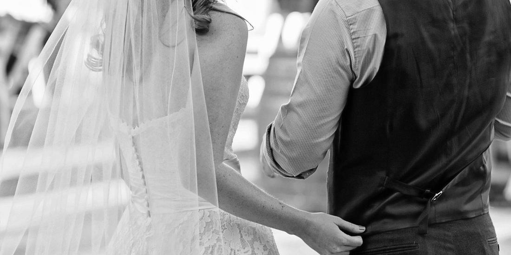

Bohemian bridal design has evolved far beyond casual festival tropes. Today's luxury boho wedding dress celebrates refined 1970s romanticism, exquisite botanical laces, and an unhurried, grounded connection to nature and personal expression.
For Melbourne brides marrying in rustic barns, vineyard estates, or beneath open country skies in Pakenham and Cardinia, boho couture offers a relaxed silhouette without compromising on intricate dressmaking craftsmanship.
1. Botanical & Crochet-Style Laces
Traditional ballroom gowns often use rigid, heavily beaded lace. Modern bohemian gowns, by contrast, feature rich matte textures: French cotton-guipure, floral leaf embroidery, and delicate crochet motifs that celebrate artisan craft. Our Briar Rose gown showcases cascading floral lace appliqués that feel organically woven into the dress.
2. Statement Sleeves with 1970s Flare
From billowing bishop sleeves gathered into buttoned cuffs to flowing bell sleeves and off-the-shoulder lace frills, statement sleeves add romantic poetry to bohemian gowns. Sleeves soften the silhouette and create breathtaking movement in candid wedding photographs.
3. Relaxed Corsetry & Fluid Skirts
A true boho bridal gown prioritises freedom. While internal boning provides flattering support across the bust, the waist and hips are left unencumbered. Soft A-lines, Empire waistlines, and low open backs let you walk through vineyards and dance until midnight without restrictive undergarments. Read our vintage-inspired wedding dress guide for deeper historical styling cues.
4. Designing Your One-of-a-Kind Boho Gown
At Bryony Jayne, every bespoke bridal commission begins with a private conversation at our Berwick studio. Bring your Pinterest inspirations, heirloom laces, or favourite fabric swatches, and Bryony will hand-draft an original pattern made exclusively for you.